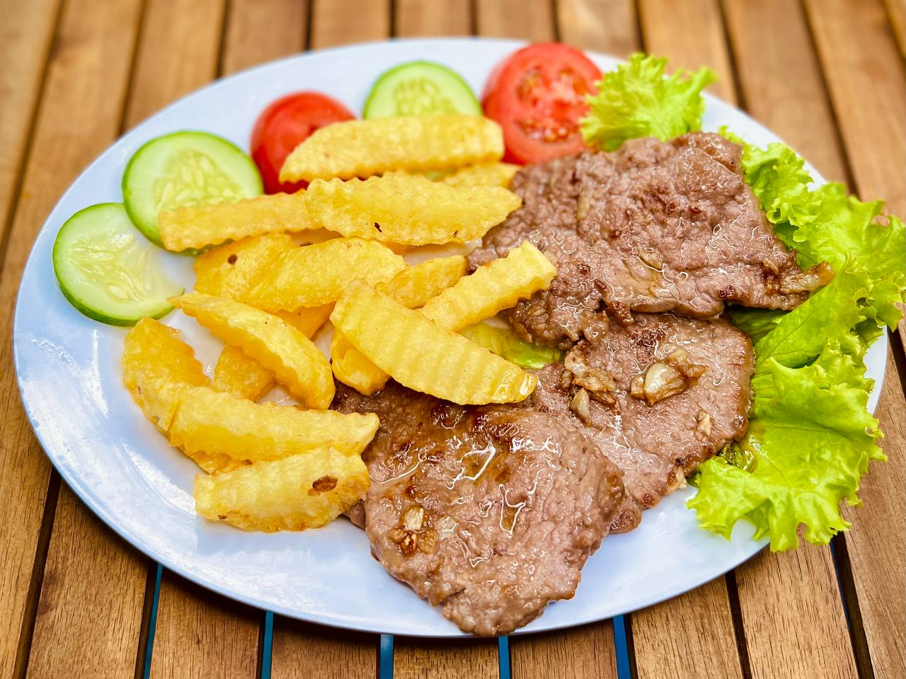

Наше меню

Жареная говяжья вырезка
Нежная говядина с чесноком и специями.
- Говядина
- Чеснок
- Масло
- Рис / картофель
Вес: 230 г
90 000 VND

Жареная рыба
Хрустящая рыба с лимоном и соусом.
- Рыба
- Соус
- Лимон
Вес: 300 г
70 000 VND

Кальмар на гриле
Нежный кальмар с чесночным соусом.
- Кальмар
- Соус
- Масло
Вес: 250 г
85 000 VND

Окунь с овощами
Филе окуня с овощами и специями.
- Окунь
- Овощи
- Соус
Вес: 280 г
75 000 VND